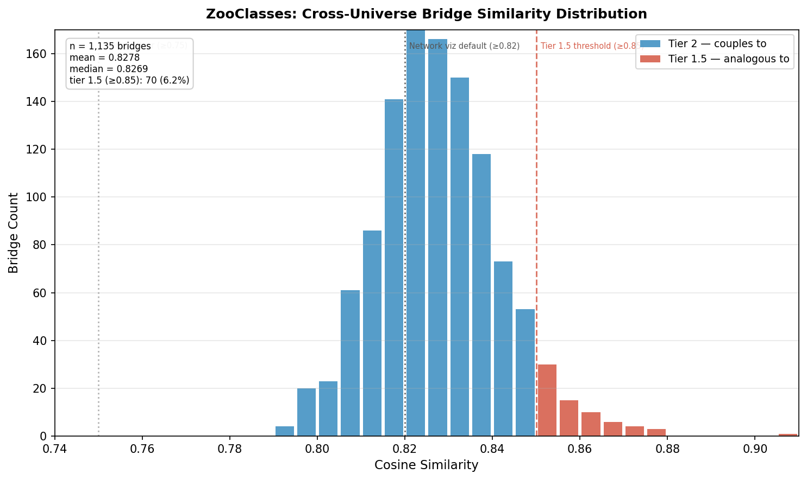
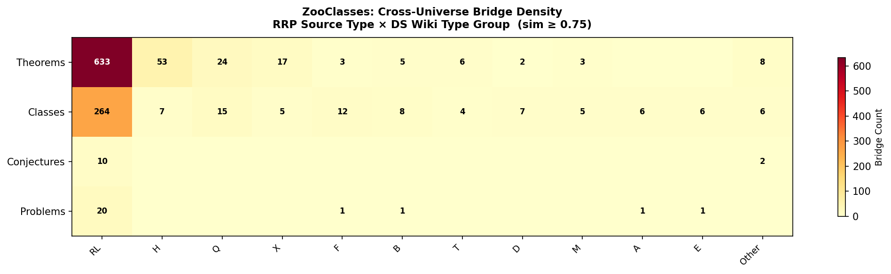
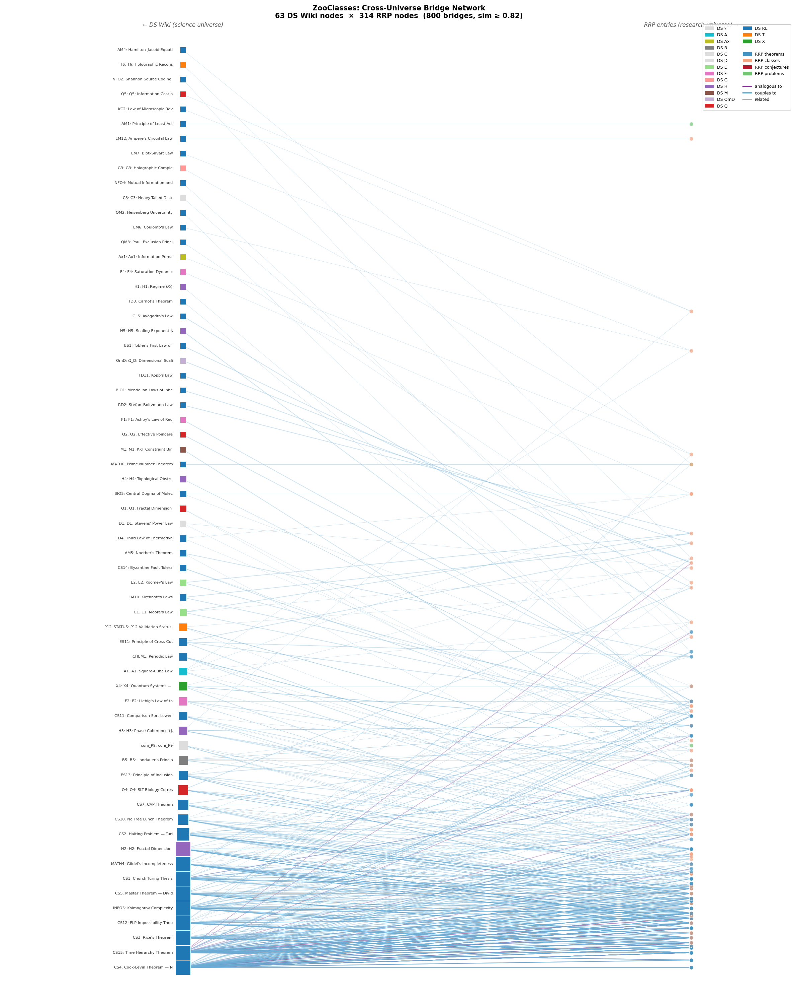

Cross-Universe Bridge Analysis — ZooClasses
Tier-2 measures how well the RRP dataset connects to the DS Wiki formal knowledge graph. Each bridge is a semantic link between an RRP entry and a DS Wiki foundation node, scored by cosine similarity. High bridge density and quality indicate the dataset is grounded in established formal structures.
Histogram of cosine similarity scores for all cross-universe bridges. Bars are colour-coded by confidence tier:

Stacked histogram with tier thresholds and network visualization cutoff marked.
Hover bars for exact counts. Use toolbar to zoom or export PNG.
Shows which DS Wiki knowledge domains each RRP entry type connects to. Rows = RRP source types (theorems, classes, etc.). Columns = DS Wiki type groups (RL, CHEM, BIO, etc.). Darker cells = more bridges.

Cell values show bridge count at sim ≥ 0.75. Sparse columns collapsed into "Other".
Hover cells for exact counts. Identify which DS Wiki domains anchor your data.
Bipartite force-directed graph showing RRP entries (left) connected to DS Wiki anchor nodes (right) at sim ≥ 0.82. Node size scales with bridge count. Highly-connected DS Wiki anchors appear as large central hubs.

314 RRP nodes + 63 DS Wiki anchors + 800 bridge edges shown.
Drag nodes to explore structure. Hover for entry titles and similarity scores.
The strongest cross-universe bridges ranked by cosine similarity. These represent the tightest connections between this dataset and the DS Wiki formal foundation.
| RRP Entry | DS Wiki Entry | Sim | Tier | Link Type |
|---|---|---|---|---|
thm_Noneterministic_time_hierarchy_theoremNoneterministic time hierarchy theorem | CS15Time Hierarchy Theorem | 0.9187 | 1.5 | analogous to |
thm_Deterministic_time_hierarchy_theoremDeterministic time hierarchy theorem | CS15Time Hierarchy Theorem | 0.9070 | 1.5 | analogous to |
thm_P⊆PHP⊆PH | CS15Time Hierarchy Theorem | 0.8790 | 1.5 | analogous to |
thm_P⊆NPP⊆NP | CS4Cook-Levin Theorem — NP-Completeness | 0.8777 | 1.5 | analogous to |
thm_Deterministic_space_hierarchy_theoremDeterministic space hierarchy theorem | CS15Time Hierarchy Theorem | 0.8777 | 1.5 | analogous to |
conj_P!=NPP!=NP | CS4Cook-Levin Theorem — NP-Completeness | 0.8742 | 1.5 | analogous to |
thm_Time-bounded_padding_argumentTime-bounded padding argument | CS15Time Hierarchy Theorem | 0.8720 | 1.5 | analogous to |
thm_Σ2⊆PHΣ2⊆PH | CS15Time Hierarchy Theorem | 0.8714 | 1.5 | analogous to |
thm_P⊂EP⊂E | CS15Time Hierarchy Theorem | 0.8712 | 1.5 | analogous to |
conj_Berman–Hartmanis_conjectureBerman–Hartmanis conjecture | CS4Cook-Levin Theorem — NP-Completeness | 0.8698 | 1.5 | analogous to |
thm_Π2⊆PHΠ2⊆PH | CS15Time Hierarchy Theorem | 0.8693 | 1.5 | analogous to |
thm_P⊆PZKP⊆PZK | CS4Cook-Levin Theorem — NP-Completeness | 0.8669 | 1.5 | analogous to |
thm_P⊆FHP⊆FH | CS15Time Hierarchy Theorem | 0.8663 | 1.5 | analogous to |
thm_Nondeterministic_space_hierarchy_theoremNondeterministic space hierarchy theorem | CS15Time Hierarchy Theorem | 0.8660 | 1.5 | analogous to |
thm_PP⊆CHPP⊆CH | CS15Time Hierarchy Theorem | 0.8657 | 1.5 | analogous to |
thm_NP⊆PHNP⊆PH | CS15Time Hierarchy Theorem | 0.8633 | 1.5 | analogous to |
thm_Savitch's_theoremSavitch's theorem | CS15Time Hierarchy Theorem | 0.8627 | 1.5 | analogous to |
thm_RBQP⊆NPRBQP⊆NP | CS4Cook-Levin Theorem — NP-Completeness | 0.8624 | 1.5 | analogous to |
thm_coNP⊆PHcoNP⊆PH | CS15Time Hierarchy Theorem | 0.8623 | 1.5 | analogous to |
cls_para-NPpara-NP | CS4Cook-Levin Theorem — NP-Completeness | 0.8621 | 1.5 | analogous to |
Verdict thresholds:
What bridges mean: A bridge connects an RRP entry to a DS Wiki node via semantic embedding similarity. Tier-1.5 bridges (≥0.85) indicate the RRP concept is structurally analogous to a formal foundation. Tier-2 (0.75–0.85) indicates a meaningful coupling worth investigating.
Recommended actions:
Caveats: Bridge similarity is based on BGE embeddings — semantic proximity does not guarantee formal equivalence. Always verify high-value bridges with domain expertise before drawing scientific conclusions.